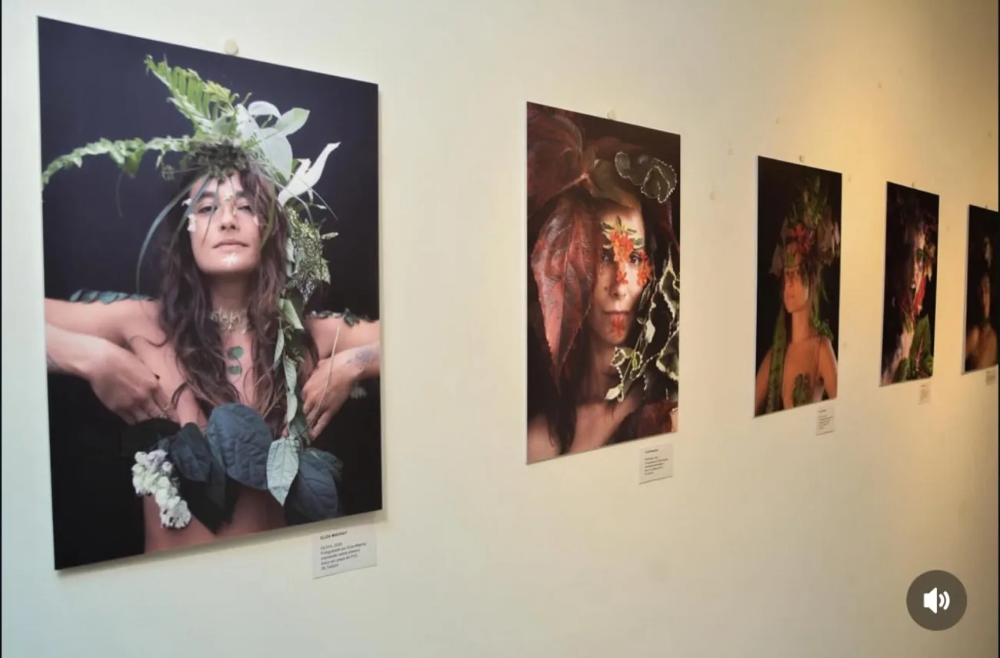
01
Musas em Retratos
Retratos de mulheres reais compostas com as plantas de sua memória afetiva — uma ode à diversidade e à força feminina.
Ver projeto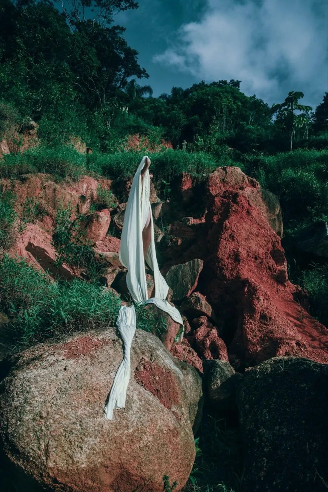
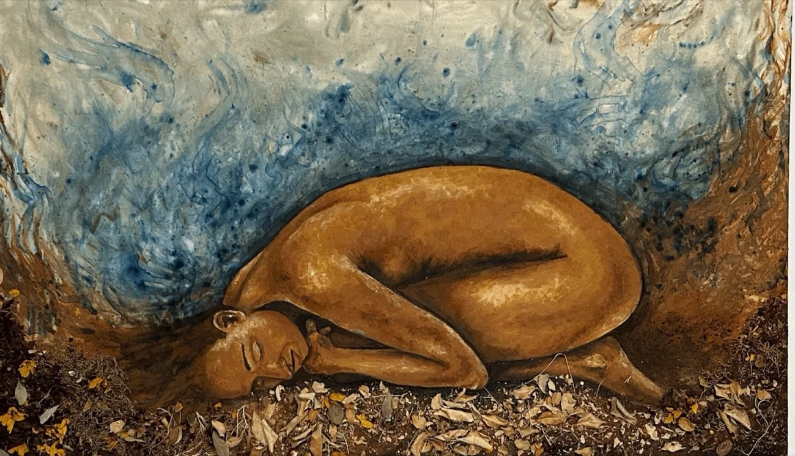
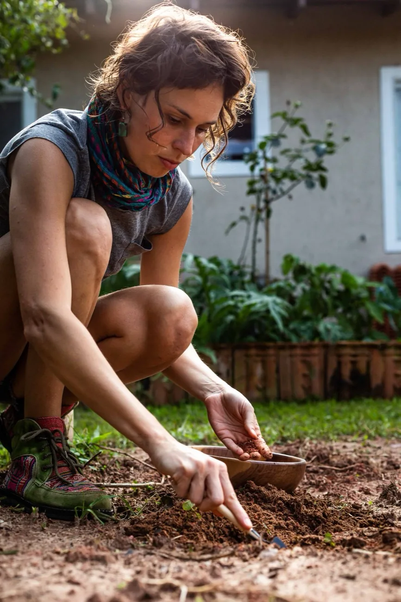
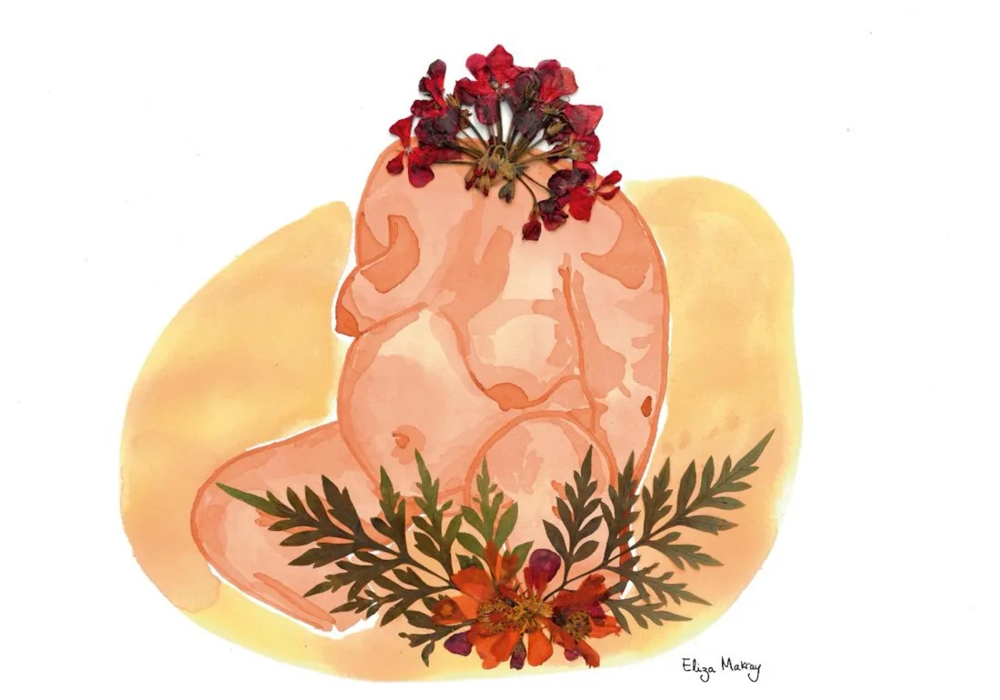
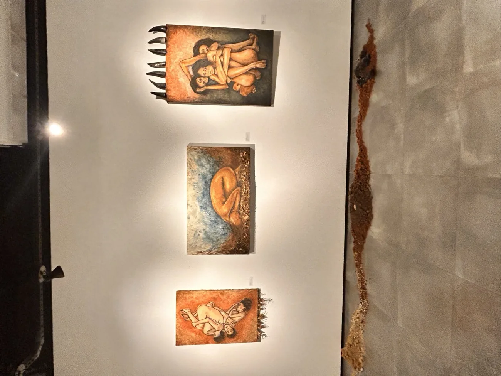
ARQ. Nº 001 / TERRA FÉRTIL, FOTOGRAFIA, 2025Artista multidisciplinar · Florianópolis, Brasil
Pigmentos naturais · fotografia · performance · instalação
Pigmentos extraídos da terra, de minerais e resíduos orgânicos — suportes e ferramentas feitos à mão.
Ver acervoExperimentações com pigmentos naturais, performance e territorialidade.
Ver acervo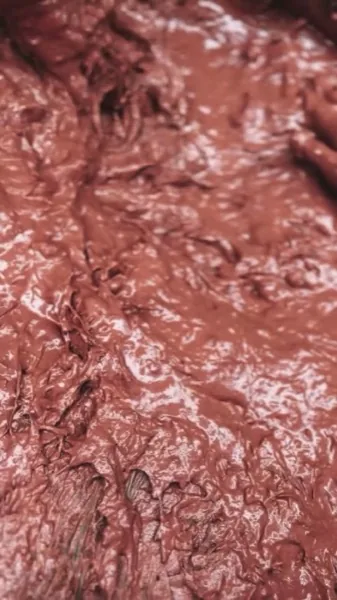
Rituais gravados em diferentes paisagens.
Ver acervo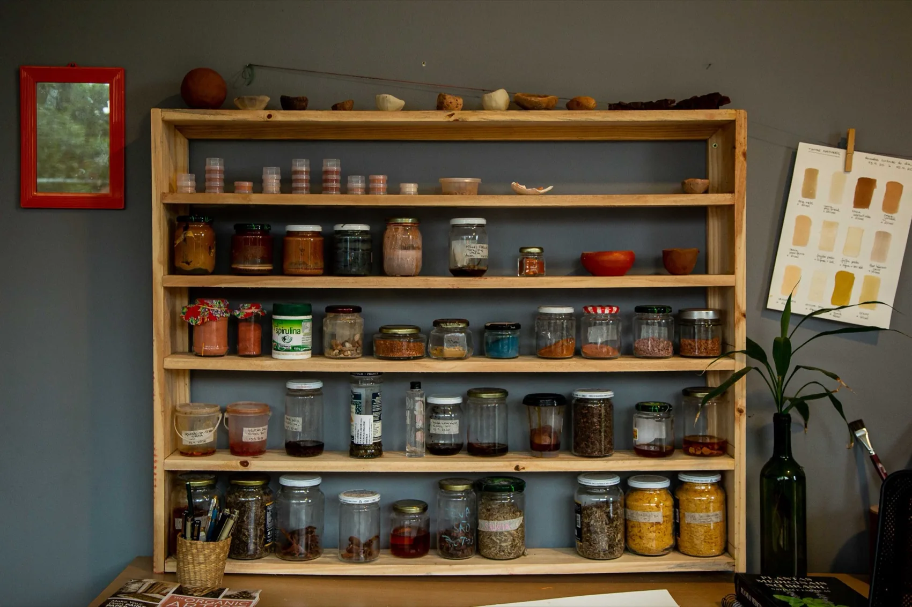
Eliza Makray, ateliê, FlorianópolisEliza Makray é artista multidisciplinar brasileira cuja prática une arte, natureza e territorialidade.
Sua criação parte da escuta dos ciclos naturais, da valorização do fazer manual e do uso consciente de materiais como tintas naturais produzidas a partir de plantas, minerais e resíduos orgânicos — sementes, flores, folhas, raízes, cascas, pedras, ossos e galhos — com os quais cria seus suportes e ferramentas artísticas. Para ela, a arte é um espaço de experimentação, cura, reconexão e resistência.
Ler manifesto completoRaízes e Reflexos: A Arte de Santa Catarina — CIC, Florianópolis · coletiva.
Musas em Retratos: 8 inspirações em Florianópolis — Galeria Lama · individual.
Terra Fértil — Galeria Lama · individual.
Musas — Galeria Venere · individual.
Musas em Retratos — Futuro Ancestral — Maratona Cultural · coletiva.
Musas — Galeria Vinhos e Versos · individual.
As Cores de Cada Vida — exposição coletiva itinerante, SC.
Musas em Retratos — Festival Expancine · Mulheres Catarinenses.
Exposição coletiva Raízes e Reflexos: A Arte de Santa Catarina, aconteceu para a reabertura das salas expositivas Lindolf Bell 1 e 2, do Centro Integrado de Cultura (CIC) de Florianópolis, SC, com curadoria de Beatriz Rey.
Musas em Retratos: 8 inspirações em Florianópolis aconteceu através da proposta aprovada no Edital do Circuito Catarinense de Cultura - PNAB SC 2024, com execução do Governo do Estado de Santa Catarina, por meio da Fundação Catarinense de Cultura (FCC) e recursos do Governo Federal e da Política Nacional Aldir Blanc. Com direção artística e produção de arte de Eliza Makray, fotografia de Letícia Ichnaz e direção de produção executiva e de comunicação de Inês Hübner, a exposição aconteceu na Galeria Lama, no centro de Florianópolis, SC, de 14 até 28 de novembro de 2025.
Exposição artística individual da artista multidisciplinar Eliza Makray, com curadoria de Isabela Sielski, realizada em abril de 2025 na Galeria Lama, situada no centro de Florianópolis, SC.
A exposição individual apresentou as séries Aquarelas Naturais e Plantas Secas e Musas em Retratos. Ocorreu na Galeria Venere, em Jurerê, Florianópolis, SC, entre 06 de fevereiro e 08 de março de 2025. A mostra celebrou o feminino e o meio ambiente por meio de conexões estéticas e conceituais.
O projeto coletivo "Futuro Ancestral", reuniu trabalhos visuais e fotográficos desenvolvidos por Ana Soukef, Clarissa Herring, Julia Perosa, Maria Luisa Coura, Maria Luiza Amorim, Mirim Gonçalves, Paloma Gomide, Renata Gordo e Eliza Makray, com a série Musas em Retratos.
A curadoria foi de Lucila Horn e integrou a programação oficial da Maratona Cultural de Florianópolis, com a exibição de fotografias projetadas diretamente nas fachadas dos prédios históricos no Centro Leste da cidade. O evento ocorreu no espaço externo integrado do Ponto Bar & Piadina, 22 de março de 2025, em Florianópolis, SC.
Na exposição individual Musas, a artista apresentou sua série de aquarelas naturais e colagem com plantas secas de nominada Musas e também realizou o lançamento da série Musas em Retratos. A curadoria foi feita pela própria artista e o evento aconteceu na galeria do Vinhos e Versos, no Rio Tavares, Florianópolis, SC.
A exposição itinerante As Cores de Cada Vida, realizada pela Polícia Civil de Santa Catarina em parceria com artistas catarinenses e o Observatório da Violência contra a Mulher, apresenta 20 retratos estilizados de mulheres vítimas de feminicídio e tentativa de feminicídio. A mostra busca humanizar essas histórias para que elas não sejam apenas números em estatísticas.
O Festival Expancine é um evento cultural e audiovisual criado pela produtora Thais Alemany. Ficou conhecido por sua edição inaugural marcante em dezembro de 2020, Mulheres Catarinenses, que reuniu dezenas de artistas visuais do estado, incluindo Eliza Makray, com projeções de vídeos e imagens ao ar livre no MULTI Open Shopping, no Rio Tavares, em Florianópolis, SC.
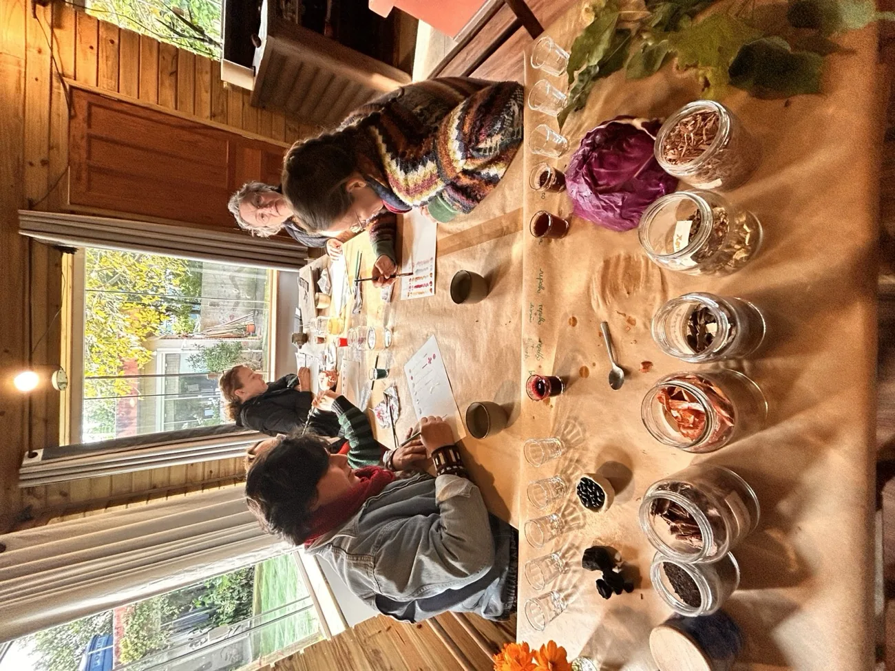
Introdução ao universo dos pigmentos naturais — para crianças e adultos.
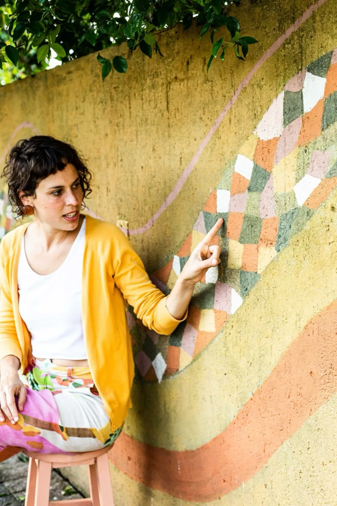
Geotintas feitas a partir da terra coletada na região onde o curso acontece.
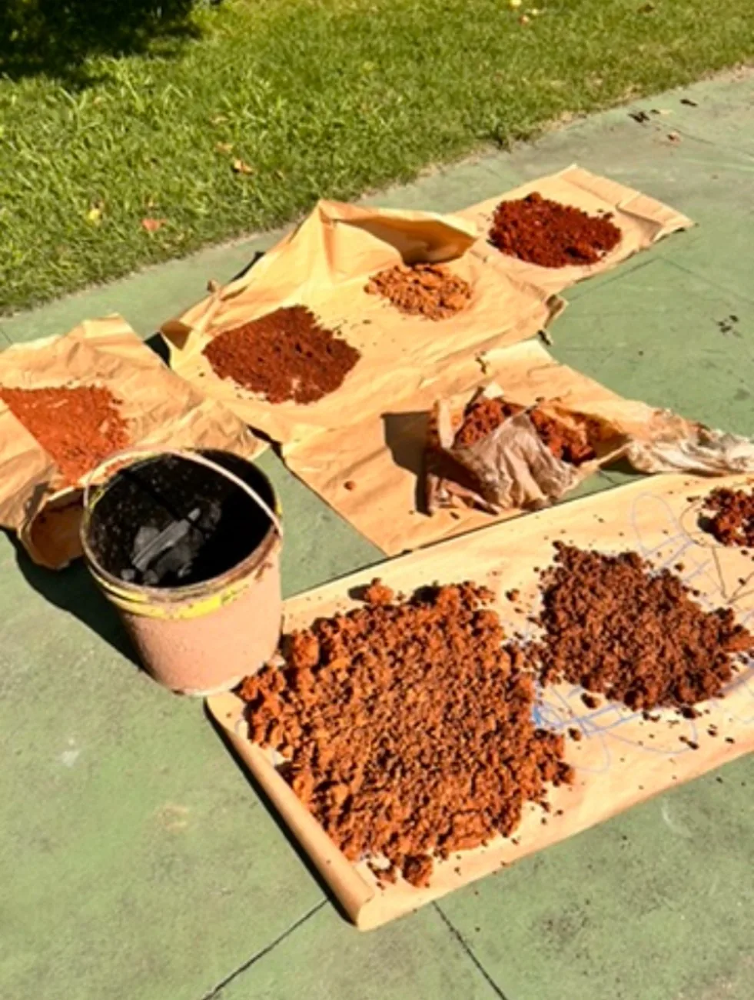
Ferramentas artísticas manuais e conscientes, à margem do consumo industrial.
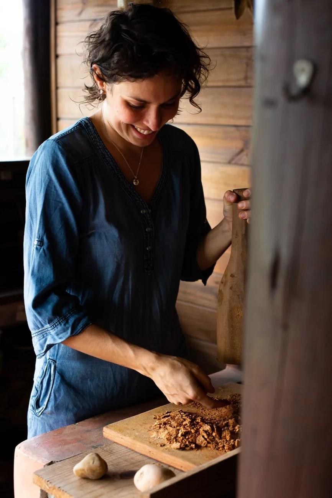
Encontros para jovens e adultos que buscam impulso para um novo projeto artístico.
Doze meses do universo botânico e feminino de Eliza Makray, transformados em objeto de convivência diária — um ciclo de arte, natureza e presença.
Conhecer o Calendário Musas